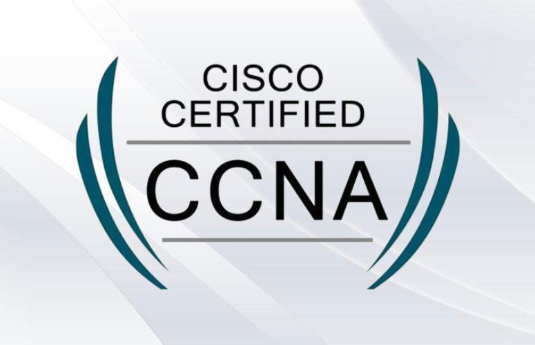

Cisco® Implementing and Administering Cisco® Solutions v1.0 (CCNA)

This course is designed for anyone seeking CCNA certification. The course also provides foundational knowledge for all
support technicians involved in the basic installation, operation, and verification of Cisco networks.
This course builds on your existing user-level knowledge and experience with computing and networking to provide you with
the knowledge and skills expected of an entry-level network administrator.
If you are pursuing a Cisco technical certification path, this course is your first step into the world of Cisco
certification.
In this course, you will implement and administer networks by using Cisco solutions.
You will:
Explain basic concepts related to networking.
Configure switching.
Configure IP addressing.
Configure routing.
Configure wireless connectivity.
Configure IP network services.
Explain basic network security concepts and practices.
Explain the use of automation and programmability in network management tasks.
Troubleshoot common network issues.
Target Audience/Prerequisites
This course is designed for anyone seeking CCNA certification. The course also provides foundational knowledge for all
support technicians involved in the basic installation, operation, and verification of Cisco networks. The job roles best
suited to the material in this course are:
Entry-level network engineer
Network administrator
Network support technician
Help desk technician
Before taking this course, you should have:
Basic computer literacy
Basic PC operating system navigation skills
Basic Internet usage skills
Basic IP address knowledge
There are no formal prerequisites for CCNA certification, but you should make sure to have a good understanding of the exam
topics.
The course covers configuring network components such as switches, routers, and wireless LAN controllers; managing network
devices; and identifying basic security threats. The course also gives you a foundation in network programmability,
automation, and software-defined networking. This course helps you prepare to take the 200-301 Cisco® Certified Network
Associate (CCNA®) exam. By passing this one exam, you earn CCNA certification. The 200-301 CCNA exam goes live on February
24, 2020.
Course Content
+ Lesson 1: Networking Fundamentals
Topic A: Network Types
Topic B: Network Components
Topic C: Network Topologies
Topic D: Network Models
Topic E: Basic Networking Protocols
Topic F: Transmission Media and Connectors
Topic G: Introduction to Cisco Networks and Cisco IOS Commands
+ Lesson 2: Configuring Switching
Topic A: Switching Concepts
Topic B: Configure Basic Switch Operation
Topic C: Configure VLANs
Topic D: Configure Interswitch Connectivity
+ Lesson 3: Configuring IP Addressing
Topic A: Configure IPv4 Addresses
Topic B: Configure IPv4 Subnets
Topic C: Configure IPv6 Addresses
Topic D: Manage Network Addressing
+ Lesson 4: Configuring Routing
Topic A: Network Types
Topic B: Network Components
Topic C: Network Topologies
Topic D: Network Models
Topic E: Basic Networking Protocols
Topic F: Transmission Media and Connectors
Topic G: Introduction to Cisco Networks and Cisco IOS Commands
+ Lesson 5: Configuring Wireless Connectivity
Topic A: Wireless LANs
Topic B: Manage WLAN Connections
Topic C: Configure Clients for WLAN Access
+ Lesson 6: Configuring IP Network Services
Topic A: IP Network Services
Topic B: Configure DHCP
Topic C: Configure NAT
Topic D: Configure NTP
Topic E: Configure DNS
Topic F: Perform Network Management
+ Lesson 7: Security Fundamentals
Topic A: Security Concepts
Topic B: Manage Passwords
Topic C: Configure Layer 2 Security
Topic D: Configure Wireless Security
Topic E: Remote Access Security
+ Lesson 8: Automation and Programmability
Topic A: Automation, Network Management, and Device Management
Topic B: Controller-Based Networking and Software-Defined Networking
Topic C: Programmability Concepts
+ Lesson 9: Troubleshooting Network Issues
Topic A: Troubleshooting Methodologies
Topic B: Troubleshoot Interface and Cable Issues
Topic C: Troubleshoot Switching Issues
Topic D: Troubleshoot IPv4 and IPv6 Addressing Issues